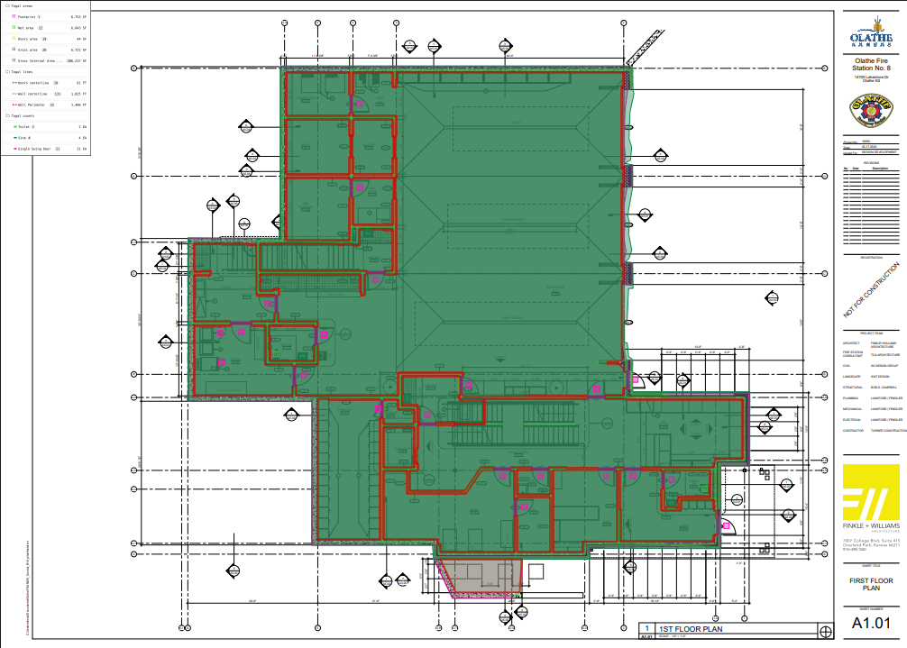

This project focused on evaluating the native AI capabilities of Togal.AI while also gaining experience with its manual takeoff tools. Five different plan sets were analyzed, each varying in level of detail and type (elevations, foundations, and floor plans).
The most common errors occurred in identifying wall perimeters and centerlines. The AI frequently detected elements that resembled walls but were not, and often misaligned centerlines along interior or exterior dimensions.
The system performed well in identifying repeated objects such as doors, toilets, and showers, but struggled with elevation drawings where quantity generation often failed.
This project explored the use of AI tools such as ChatGPT and Claude for quantity takeoffs and cost estimation.
Clear and specific inputs were essential for accuracy. Advanced “thinking” modes improved results but increased response time, while higher-tier models provided more detailed outputs.
Claude proved more detail-oriented, while ChatGPT had limitations such as not being able to generate Word documents. The quality of scanned drawings also significantly impacted accuracy.